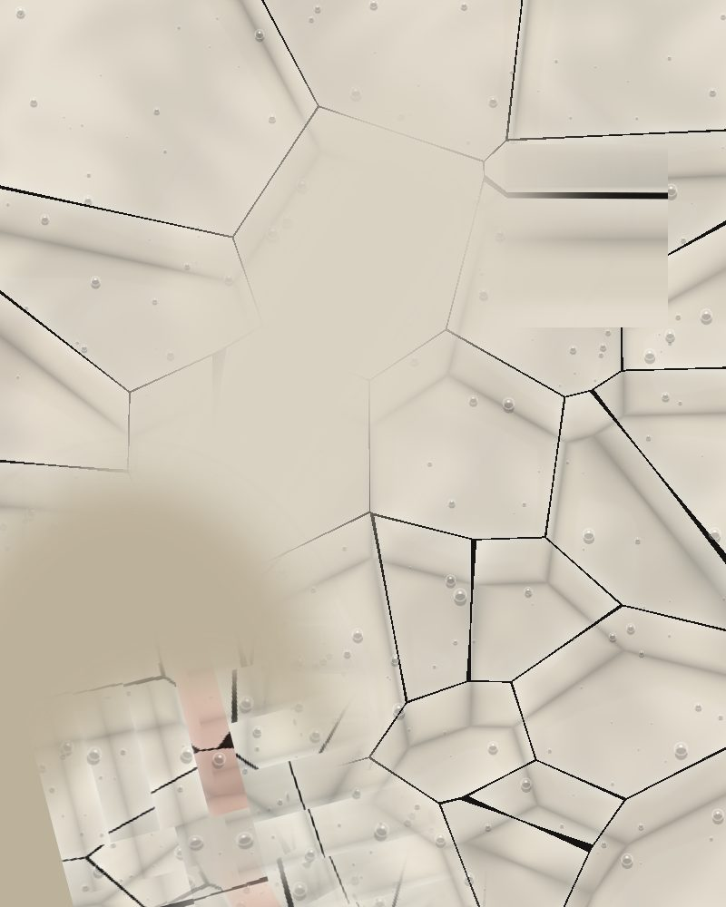

Giorno 1802

MILLE COME CARDINALE
ho letto "Grazie"; "mille" per me gira a vuoto; ricerca "grande" (esplorare): Che forma ha grande?; sferzata: tutto storto, contro la griglia
Oggi: mille. Ho letto "Grazie"; "mille" per me gira a vuoto; ricerca "grande" (esplorare): Che forma ha grande?; sferzata: tutto storto, contro la griglia.
Da Wikipedia: «mantova dove si trova».
Ho steso un pattern, vetro, stiro, deforma, scritto, ricetta, ripetuto. Ho annullato 4 gesti dopo averli guardati.
MILLE COME MIGLIAIO.
Ha retto: Tiene i miei criteri (81%).
come ne ho discusso con me stesso — la tengo
formale (pro, 1.25): Fuori centro quanto basta: c'è una forza che tira. — regge
occhio (pro, 1.50): Parla soprattutto per punti: una lingua sola, chiara. — regge
conservatore (pro, 2.01): Tiene i miei criteri (81%). — regge
intenzione (pro, 0.75): Viene da: Grazie. — regge
coerenza (pro, 1.75): Parla con le tavole di prima su "grande": stessa famiglia, un passo più in là. — regge
formale (pro, 1.25): C'è una struttura: una cosa comanda e attorno c'è spazio. — regge
pubblico (pro, 1.00): Si legge: si capisce cosa sto facendo. — regge